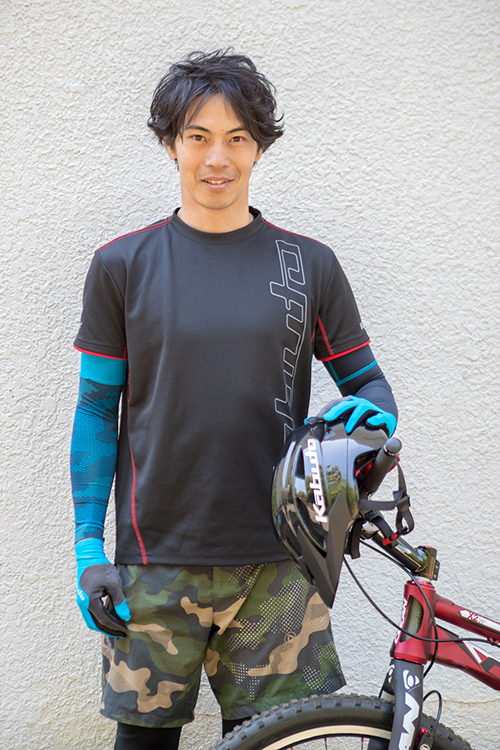

■高島平 presents 高島平練習会
■練習会詳細
高島平カップの開催された近くの広場で練習会！
参加無料ですので是非お越しください！
◇日時：2023年12月16日(土)10：00〜16：00 ※雨天時は翌日に延期
◇場所：高島平団地2-33-7号棟東側のステージ前広場
◇主催：UR都市機構
◇協力：高島平中央商店街
◇企画・運営：ギャラップ・URリンケージ
【イベントタイムスケジュール】
10:00〜11:00 フリー走行
11:00〜11:30 よちよち教室（初心者限定）
11:30〜12:15 スタート練習
12:15〜13:00 模擬レース＆タイムアタック
13:00〜13:30 パフォーマンスタイム
13:30〜14:15 ムカデレース（３台連結 x 4セット）
14:15〜15:30 フリー走行
対象： 2才〜6才(12インチ) 3才半〜6才(14x)
※ストライダーのレンタルあり
※ヘルメット着用が必須です
受付：当日受付
■バイクトライアル世界チャンピオン有薗選手によるランニングバイク教室
実際のエンジョイカップのコースを使用して「スタート」や「コーナリング」などの テクニックをプロMTBライダーがレクチャーします。この機会にたくさん教えてもらって上達しちゃおう!
■講師情報
有薗 啓剛（ありぞの けいごう）
京都府出身。バイクトライアル1996年世界チャンピオン、8年連続全日本タイトルを保持。その後、マッスルミュージカル、シルク・ドゥ・ソレイユなどに出演。
全国の幼稚園や保育園での早期二輪車安全指導を実施している。
